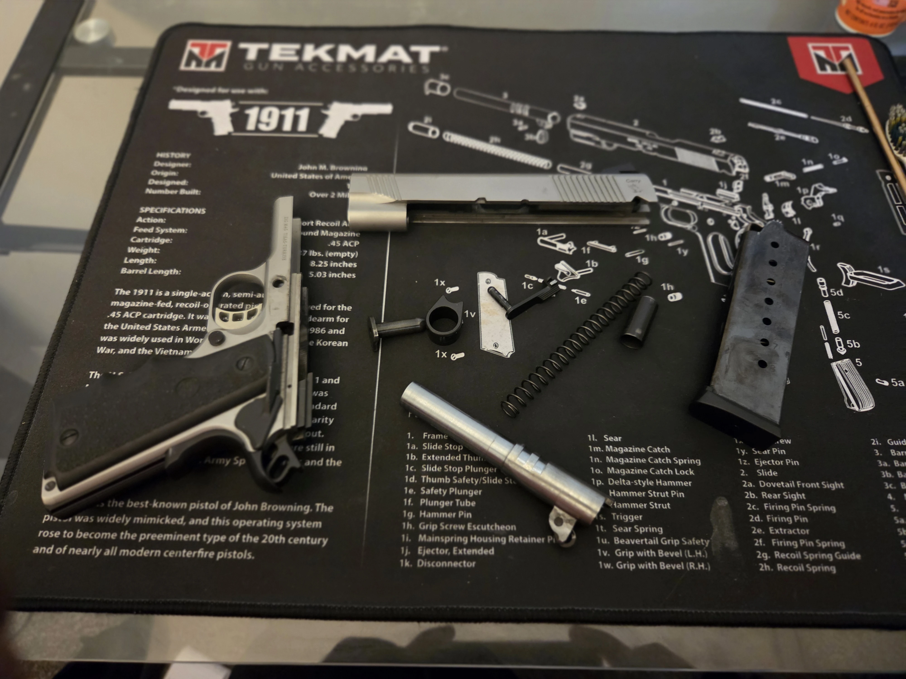

Clear the Workspace
Keep ammunition away from the cleaning area. Preferably, all ammunition should be in a separate room.
Make sure your firearm is unloaded and you are working in a clean well lit area. Follow Safety guidelines before beginning the cleaning process.

Keep ammunition away from the cleaning area. Preferably, all ammunition should be in a separate room.
Remove the magazine and check the chamber to ensure there is no ammunition in the firearm.
Always refer to the firearm's manual for specific instructions on disassembly and cleaning.
Wear safety glasses to protect your eyes from cleaning solvents and debris. Gloves can also be worn to protect your hands from chemicals.